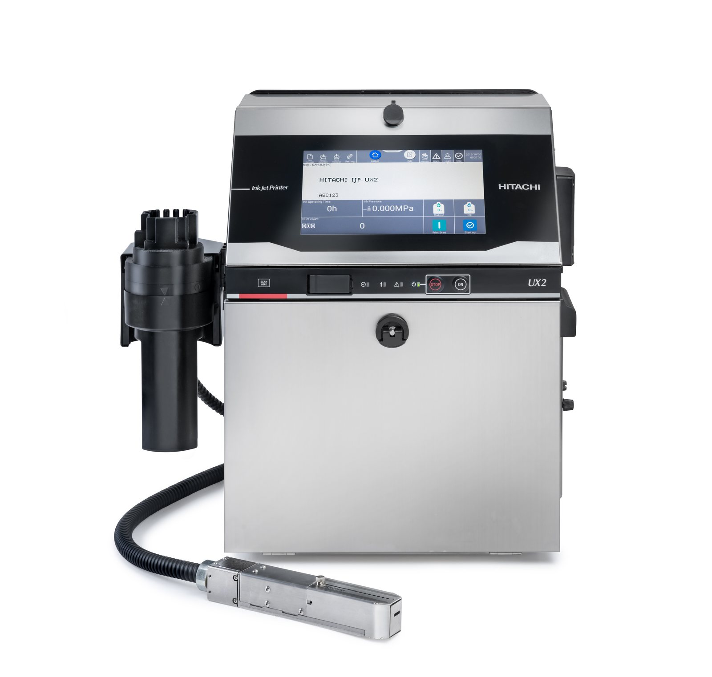

PET · Lata · Vidro
Alta velocidade com resistência à condensação da linha fria — até 72.000 garrafas/hora.
Ver solução para bebidas →A codificadora industrial mais avançada da Hitachi, projetada para envase de alta velocidade em PET, lata, vidro e flexíveis. Tela 10,1" colorida, IoT integrada e troca de mensagem sem parar a linha — o equipamento padrão da AmBev, Coca-Cola e cervejarias premium.

A UX2-D160W codifica linhas de envase de até 72.000 garrafas/hora (90.000 latas/hora) sem nenhuma redução de velocidade, imprimindo direto no substrato — PET, lata, vidro ou flexível — mesmo com a condensação típica da linha fria.
O sistema de troca de mensagem por SKU em um toque na tela 10,1" muda o lote sem tirar a linha do ar, e a IoT integrada conecta a codificadora ao seu ERP, MES ou CLP.
| Especificação | Hitachi UX2-D160W |
|---|---|
| Velocidade máxima | Até 3.173 caracteres/segundo |
| Linhas de impressão | Até 5 linhas |
| Caracteres por linha | 240 a 1.000 |
| Altura de caractere | 2 a 10 mm |
| Matriz de impressão | 5×5 a 34×24 |
| Proteção | IP65 — poeira e jatos d'água, sem perder calibragem |
| Display | TFT LCD 10,1" colorido · touch · multilíngue |
| Mensagens armazenadas | 300 a 2.000 |
| Conectividade | USB · Ethernet · RS-232 (ERP · MES · CLP) |
| Umbilical | 4 m (em linha ou 90°) |
| Temperatura de operação | 0 a 50 °C |
| Umidade | 30 a 90% UR |
| Dimensões (L × P × A) | 460 × 425 × 534 mm |
| Peso | 27 kg |
| Alimentação | AC 100–120 / 200–240 V ±10% · 50/60 Hz |
| Estação de limpeza | Opcional |
| Insumos | Tintas MEK Hitachi · código S10 rastreável |
Dados de referência do comparativo técnico Hitachi. Confirme a configuração exata para a sua linha com a engenharia de aplicação Suljett.
Alta velocidade com resistência à condensação da linha fria — até 72.000 garrafas/hora.
Ver solução para bebidas →Marcação e rastreabilidade em embalagens primárias e secundárias, conforme a RDC ANVISA 727/2022.
Conforme ANVISA, com tinta certificada para contato indireto em blister, frasco e cartucho.
PET, vidro e bisnagas sem comprometer a estética da embalagem.
Velocidade, resolução, consumo, IP, dimensões e compatibilidade por substrato — os dados que você precisa para especificar antes de cotar.
Testamos a marcação no seu PET, lata, vidro ou flexível antes da compra. Você recebe a peça impressa, não foto de catálogo — e enxerga o resultado na sua embalagem.